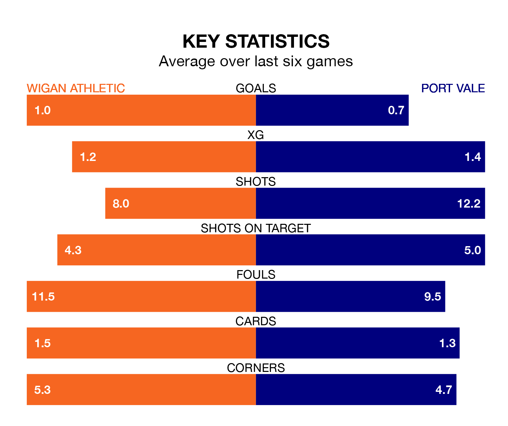

Port Vale travel to Wigan Athletic on Saturday in EFL League One.
The visitors come into the game on the back of a defeat in their last match, having lost to Northampton Town 2-0 away.
The Latics also lost their last match, 3-1 against Cambridge United, with their goal scored by Martial Godo.
Vale are 21st in the table after 40 games, of which they have won 10 and drawn nine, earning 39 points.
Wigan are 11 places ahead of the Valiants in 10th, with 17 wins and eight draws putting them on 59 points.
With 38 goals in 40 games so far this season, the away side are scoring at below the league average rate with 0.9 goals per game. And they are conceding more than average, letting in 63 goals at a rate of 1.6 per game.
Athletic, meanwhile, are average scorers, with 1.3 goals per game. They have also conceded 1.3 goals per game.
The Latics are in mixed form in EFL League One, with two wins and a draw from their last six games.
And also with two wins and a draw over that period, Vale's form is identical – they have both taken seven points from 18.
Saturday's match will be refereed by Paul Howard, who has taken charge of 10 EFL League One games so far this season, issuing two red cards and booking 44 players. He has awarded one penalty.
The last Wigan game Howard refereed was a 3-2 home loss to Charlton Athletic on October 31. His last Vale match was their 1-0 loss at home against Derby County on November 28.
Updated: 16:41 (UTC), 04/04/24